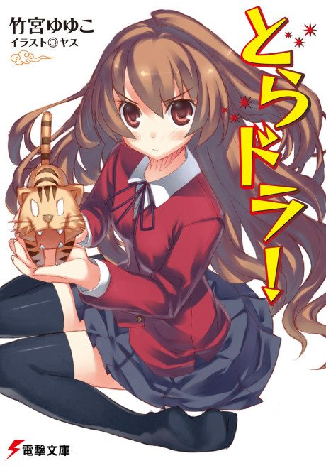

Animeter
 Anime
Anime
Light novel2008 · Comedy, Drama, Romance
Toradora!
とらドラ！
AniList7.7
Animeter—
Episodes25 ep
SourceLight novel
Key events
These are spoilers. They stay blurred until you reveal them, one at a time or all at once.
Tiger and Dragon Ep 1–4
- A misdelivered love letter reveals that Taiga likes Ryuji's best friend Yusaku Kitamura.
- Ryuji admits he likes Taiga's best friend Minori Kushieda, and the two form an alliance.
- Ryuji learns why Minori works so many part-time jobs.
Ami and Summer Ep 5–10
- Ami's two-faced personality is exposed, and she drops her act around the group.
- Ryuji saves Taiga, who can't swim, at the pool.
- The group spends a summer trip at Ami's beach house, where Minori and Kitamura stage fake ghost scares.
The Cultural Festival Ep 11–13
- Taiga's father Rikuro reappears and promises to come to the festival.
- Rikuro fails to show up, leaving Taiga hurt.
- Taiga wins the beauty pageant, and Ryuji and Minori finish the relay together.
The Student Council Election Ep 14–16
- Kitamura runs away to Ryuji's home after quitting the student council.
- Taiga runs for student council president to help him.
- Kitamura confesses to council president Sumire Kano, who leaves to study abroad, and Taiga fights her.
Christmas Ep 17–19
- Minori avoids the Christmas party and pulls away from Ryuji.
- Taiga realizes on Christmas Eve that she loves Ryuji.
- Minori rejects Ryuji's confession.
The Ski Trip Ep 20–22
- Taiga falls during a blizzard and is rescued by Ryuji.
- A dazed Taiga confesses her feelings for Ryuji without realizing he can hear.
- Ryuji starts to realize what Taiga means to him.
Valentine's and Graduation Ep 23–25
- Ryuji's mother Yasuko collapses, and Taiga and Minori clash over hiding their feelings.
- Ryuji and Taiga confess to each other and decide to run away together.
- Taiga leaves to sort out her family, and the two reunite at graduation.